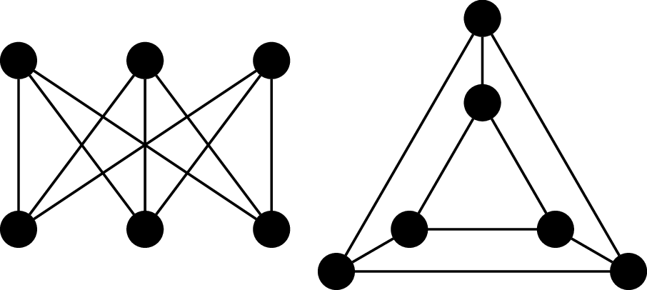
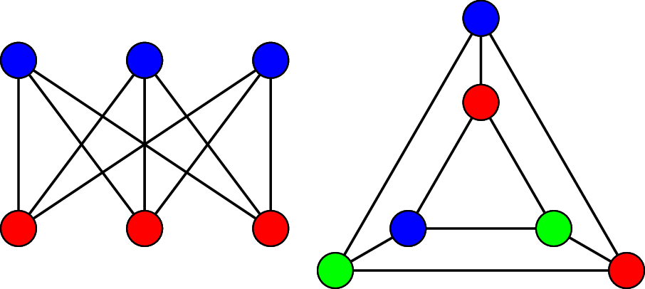
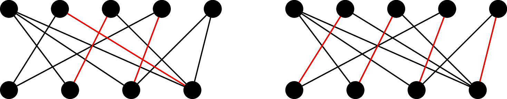

We can take the idea that the vertices and their adjacency defines a graph and come up with a way represent a graph using only this information.
Definition 25.1. The adjacency matrix $A$ of a graph $G = (V,E)$ with $V = \{v_1, v_2, \dots, v_n\}$ is an $n \times n$ matrix such that
$$A_{i,j} = \begin{cases} 1 &\text{if $(v_i, v_j) \in E$,} \\ 0 &\text{otherwise.} \end{cases}$$
So in the above graph $G_1$, we arbitrarily assign rows/columns 1 through 8 by $a_0, a_1, a_2, a_3, b_0, b_1, b_2, b_3$, and we get the following adjacency matrix, $$\begin{pmatrix} 0 & 0 & 0 & 0 & 0 & 1 & 1 & 1 \\ 0 & 0 & 0 & 0 & 1 & 0 & 1 & 1 \\ 0 & 0 & 0 & 0 & 1 & 1 & 0 & 1 \\ 0 & 0 & 0 & 0 & 1 & 1 & 1 & 0 \\ 0 & 1 & 1 & 1 & 0 & 0 & 0 & 0 \\ 1 & 0 & 1 & 1 & 0 & 0 & 0 & 0 \\ 1 & 1 & 0 & 1 & 0 & 0 & 0 & 0 \\ 1 & 1 & 1 & 0 & 0 & 0 & 0 & 0 \end{pmatrix}$$ Then, if we apply our bijection $f$, we end up with the same adjacency matrix for $G_2$.
What is neat about the adjacency matrix is that it's easily extended to fancier definitions of graphs if we wish. For instance, if we want to consider graphs with multiple edges, we can make this a matrix with integer entries instead of just 0 and 1. Or if we want to represent a directed graph, then we can make the $(i,j)$th entry correspond to the edge $(i,j)$, which would not have to be symmetric with the $(j,i)$th entry.
Returning to the graph isomorphism problem, there are a few ways we can rule out that graphs aren't the same, via properties that we call isomorphism invariants. There are properties of the graph that can't change via an isomorphism, like the number of vertices or edges in a graph.
Definition 25.2. A $k$-colouring of a graph is a function $c : V \to \{1,2,\dots,k\}$ such that if $(u,v) \in E$, then $c(u) \neq c(v)$. That is, adjacent vertices receive different colours. A graph is $k$-colourable if there exists a $k$-colouring for $G$.
We will use $k$-colourability as an invariant to show that two graphs are not isomorphic.
Example 25.3. Consider the following two graphs, $G_1$ and $G_2$.

First, we observe that both graphs have 6 vertices and and 9 edges and both graphs are 3-regular (that is, every vertex has degree $3$). However, we will show that $G_1$ is 2-colourable and $G_2$ is not. To see that $G_1$ is 2-colourable, we observe that the vertices along the top row can be assigned the same colour because they are not adjacent to each other. Similarly, the vertices along the bottom can be assigned a second colour.

However, $G_2$ contains two triangles and by definition, the vertices belonging to the same triangle must be coloured with 3 different colours. Since $G_2$ is not 2-colourable, the adjacency relationship among the vertices is not preserved.
What we would like is some easy to compute graph invariants that tell us that we do have an isomorphism, so we don't have to search over $n!$ different possible mappings. Unfortunately, we don't know of any that exist, so graph isomorphism remains difficult to solve. Let's define the notion of a subgraph.
Definition 25.4. A graph $G' = (V',E')$ is a subgraph of a graph $G = (V,E)$ if $V' \subseteq V$ and $E' \subseteq E$. The subgraph induced by a subset $V' \subseteq V$ is the largest subgraph of $G$ with vertex set $V'$. We say that $G'$ is a spanning subgraph if $V' = V$.
Example 25.5. Consider the graphs from Example 25.3. One graph contains $K_3$ (the complete graph over 3 vertice – a triangle) as a subgraph (or alternatively contains a subgraph isomorphic to $K_3$), while the other does not.
The subgraph isomorphism problem asks whether given graphs $G$ and $H$ whether there is a subgraph of $G$ that is isomorphic to $H$. This problem is known to be hard to solve: it's NP-complete, which means that if we have a solution for the problem, we can check it efficiently, but we have no efficient algorithms for solving it. It's not hard to see that graph isomorphism is a special case of subgraph isomorphism.
Consider again our graphs from Example 25.3. Since we showed the graph was 2-colourable, this amounted to dividing the vertices up into two sets (or a partition) so that all of the edges of the graph only travel between these two sets. This gives us another special type of graph.
Definition 25.6. A graph $G = (V,E)$ is bipartite if $V$ is the disjoint union of two sets $V_1$ and $V_2$ such that all edges in $E$ connect a vertex in $V_1$ with a vertex in $V_2$. We say that $(V_1, V_2)$ is a bipartition of $V$.
We get the following characterization of bipartite graphs for free from the definition of 2-colourability.
Theorem 25.7. A graph $G$ is bipartite if it is 2-colourable.
Similar to the idea of complete graphs, we can define complete bipartite graphs.
Definition 25.8. The complete bipartite graph on $m$ and $n$ vertices is the graph $K_{m,n} = (V,E)$, where $(V_m,V_n)$ is a bipartition of $V$ with $|V_m| = m$ and $|V_n| = n$, and $$E = \{(u,v) \mid u \in V_m, v \in V_n \}.$$
The bipartite graph from Example 25.3 is $K_{3,3}$.
Bipartite graphs come up naturally in a lot of applications because a bipartite graph models relationships between two groups of things: job applicants and potential employers, PhD students and PhD advisors, pigeons and pigeonholes, etc. In many of these applications, we would like to assign or match an object from the first set with an object from the second. This leads to the following notion.
Definition 25.9. A matching in a graph $G = (V,E)$ is a subset of edges $M \subseteq E$ such that no two edges in $E$ share the same incident vertex. A vertex that is incident to an edge in a matching $M$ is matched in $M$; otherwise, it is unmatched. A maximal matching is a matching that cannot be made larger; in other words, every edge in $E \setminus M$ is incident to a vertex matched in $M$. A maximum matching is a matching with the maximum number of edges. A matching $M$ in a bipartite graph $G = (V,E)$ with bipartition $(V_1, V_2)$ is a complete matching from $V_1$ to $V_2$ if every vertex in $V_1$ is matched in $M$.
The above definitions distinguish between maximal and maximum matchings. Just because you have a matching that can't be expanded doesn't mean that you necessarily have the largest possible matching!
Example 25.10. Consider the following graph and the highlighted matchings.

On the left, we have a maximal matching, since no edges can be added to the matching without violating the matching condition. However, this graph can exhibit a larger matching, which we have on the right. Since every vertex on the bottom is matched, this is a complete matching, and therefore, it is also a maximum matching. However, other maximum matchings exist for this graph.
The following result gives us a necessary and sufficient condition for a bipartite graph to have a complete matching and is due to Philip Hall, who was a British group theorist and worked at Bletchley Park during the Second World War.
Theorem 25.11 (Hall's Matching Theorem). Let $G = (V,E)$ be a bipartite graph with bipartition $(V_1,V_2)$. Then $G$ has a complete matching from $V_1$ to $V_2$ if and only if $|N(A)| \geq |A|$ for all subsets $A \subseteq V_1$.